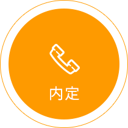

グローバルレベルで「優秀」だから採用する
ベトナム理系トップ大学
日本語バイリンガルITエンジニア
新卒採用フェア
2015年9月開催
グローバルレベルで「優秀」だから採用する
2015年9月開催
日本におけるIT人材は量的不足が指摘されていますが、質的にも不足しています。私たちフランジアはこの問題を海外で解消するべく、ベトナムでオフショア開発会社として拠点を構える一方、ハノイ工科大学と正式に産学連携を結び、ベトナム人の日本語IT育成へ様々な取り組みを行っております。
日本語とITを学ぶ学生は日本での就職を強く希望しており、フランジアとハノイ工科大学は日本企業に優秀な学生を紹介するため、現地にてジョブフェアを共催しております。
POINT 1
ベトナム理系トップのハノイ工科大学にて、日本のODAによるHEDSPIと呼ばれる日本語が使えるエンジニアを育成するプロジェクトを行っています。
POINT 2
内定者は弊社の新入社員向けRubyトレーニングを２ヶ月ほど受講します。その後規定のレベルに達した者からフランジアの社内プロジェクトにOJTとして参加します。
POINT 3
ハノイ工科大学の日本語授業の他に大学内でフランジアが提供する授業外授業や日本人との会話トレーニングなどを内定者用にご用意しています。
ハノイ工科大学は1956年に理系分野の教育・研究活動において先導的役割を果たすために設立されたベトナム最初の国立技術系総合大学です。日本のODAによってHEDSPIという日本語が使えるエンジニアを育成するプロジェクトを行っています。
また、東京工業大学、京都大学、慶應義塾大学、立命館大学など日本の多くの大学と交流協定を結んでいます。

HEDSPI （Higher Education Development Support Project on ICT） とは、日本語のできる高度IT人材を育成するために、日本のODAを使用して2006年にハノイ工科大学で開始されたプロジェクトです。毎年ハノイ工科大の入学者3500名の中から選抜し、日本語や日本の商習慣を理解し、日本とベトナムの間を橋渡しすることができるITSS レベル3（業務に必要な知識を持ち合わせ、独力で業務を進めることができるレベル）相当に対応するスキルを持ったブリッジSE人材をIT関連産業界に供給することを掲げています。
HEDSPIは「ハノイ工科大学ITSS教育能力強化プロジェクト」と円借款事業「高等教育支援事業（ITセクター）」の二つで構成され、技術協力では、経済産業省が策定したIT技術者の実務能力指標「情報処理技術者スキル標準（ITSS）」を基に、大学のカリキュラム、シラバス、教材を開発するとともに、教授法を伝えています。円借款事業では機材の購入や日本語教育、日本の大学（立命館大学、慶應義塾大学、会津大学）へのHEDSPIから約20名の留学生派遣（2014年終了）を行っています。
ベトナムの新卒学生を採用するメリットはなんでしょうか？
ベトナムは国際数学オリンピックでは毎年100ヶ国中、10位以内常連国で日本よりも成績は上です。またベトナムの理数系トップの頭脳はプログラマになります。ハノイ工科大のHEDSPIはそのような世界的にも優れた頭脳を持った理系人材が日本語とプログラミングを勉強するプログラムなのです。
日本のトップ大学の情報工学学部卒業生と比べても地頭、数学、プログラミングスキルで劣るとことはほとんどありません。もちろん日本語力はネイティブレベルではありませんが、プログラミングの現場では十分に力を発揮してくれます。
なぜ日本での就職を希望しているのですか？
HEDSPIの学生のほとんどは下記理由から日本での就職を希望しています。
１．日本の優秀なエンジニアと一緒に仕事することでスキルを磨きたい
２．日本語能力を向上させたい
３．ベトナムに比べ日本での待遇が魅力的
今回採用した場合の入社時期はいつになりますか？
学生の卒業年がバラバラのため学生によって異なりますが、通常は来年の8月卒業か今年の8月卒業になります。
面接は何語で実施すれば良いでしょうか？
基本的には日本語で行っていただきます。しかし、弊社の通訳を付けさせていただきます。コミュニケーションがスムーズに行かない場合通訳が助け舟を出すことで面接をサポートいたします。
ベトナム人学生を採用した場合、ジョブフェア参加費以外にどのようなものがありますか？
入社時の日本への渡航費用（各社の取り決めによる）、ビザ取得費用、健康診断費用になどがあります。また渡日する前に住居を用意しく必要があります。家賃は給料から天引きしても物件は法人契約とすることをお勧めいたします。ベトナム人が契約者だと大家さんが契約をしてくれないケースがございます。
採用したベトナム人の給料などの待遇はどうすればいいですか？
基本的には日本人の新卒と同じ条件で構いません。
実際にハノイにてグループ面接と個別面接を行っていただきます。

面接後に採用する学生に内定を出します。企業側の責任者と学生が内定書にサインします。
日本で長期間働くための就労ビザを取得します。

卒業後に日本へ招致し、就業します。

日系企業により運営される、栄光スクールハノイ校に通えます。
本スクールでは、日本語能力検定試験（N1（ネイティブレベル）〜N3（日常生活レベル））対策講座を選択して受講頂けます。
ジョブフェア基本契約に含まれており、無料で受講頂けます。
一般的な日本語講座ではカバーできない「日本でITを仕事とする外国人に必要な日本語」を想定した講座を開催いたします。
・名刺交換やメールの書き方等のビジネスルール
・日本の文化、生活に必要となる言葉や電車の乗り方等の知識
・ITの仕事場でよく利用されるカタカナ言葉
※講師は全て弊社が用意した日本人が担当し、「生」の日本語に触れることを重要視しています。弊社が3年以上ハノイでオフショアビジネスをしている知見を活かし、ベトナム人がITビジネスに携わる上で困ることを想定したコースにいたしました。
フランジアでは自社採用社員に向けて弊社トレーニングルームでIT研修を実施しています。貴社の内定学生に本研修へご参加頂きます。
標準的な研修期間は2ヶ月で、webアプリケーション作成に必要なIT基礎知識の座学から、実際にコードを書く演習、最後はチームでwebアプリケーションを実装する模擬プロジェクトを行います。
研修は専任のマネージャーが全体を管理しており、定期的に受講者のスキル評価を行っています。
この研修では言語にRubyを用い、Ruby on Railsを用いてアプリケーションを実装します。
スマートフォンアプリケーション開発がメインとなる場合、webアプリケーションの実装は受講しない、等の調整も可能です。
※言語やフレームワークを貴社の選択に併せての開催については、ご相談下さい。
貴社人事部の方等や配属先部署の方にベトナムへお越し頂き、貴社内定学生およびその親御様との懇親会を設定いたします。
貴社のベトナム訪問時のアテンド、参加者全員のスケジュール調整、会場の設営・準備や懇親会後の会食手配等を弊社が担当いたします。
過去参加された親御様より、外国で働くことになるご子息を安心して送れるとの感想を頂いており、日本以上に家族を大切にする文化のベトナムではこのような父母会を開催されることをお勧めします。
※折り返し担当者よりご連絡差し上げます。
ご連絡先をお間違えになっているとご連絡さし上げられない場合がありますので予めご了承下さい。
| 貴社名 | |
|---|---|
| ご担当者名 | |
| Eメールアドレス | |
| 電話番号 | |
| ご質問 |